- Flame: Spatial domain in which rapid exothermic chemical reactions take place producing heat and emitting light.
- Premixed flame: Fuel and oxidizer are mixed well at the molecular level before combustion.
- Examples:
General Introduction
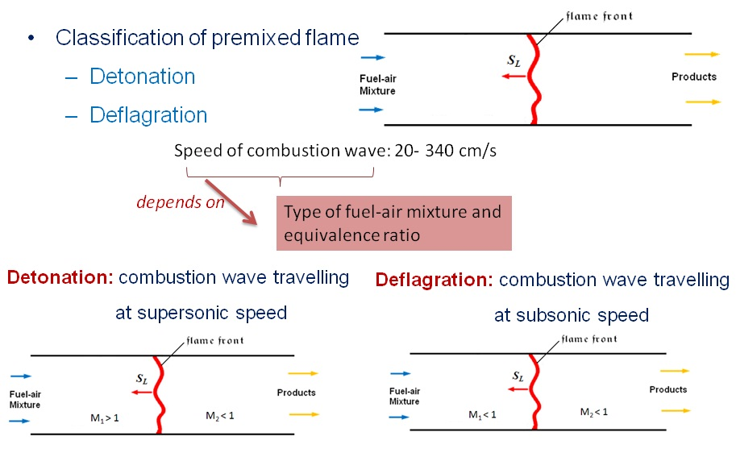

1-D Premixed Flame
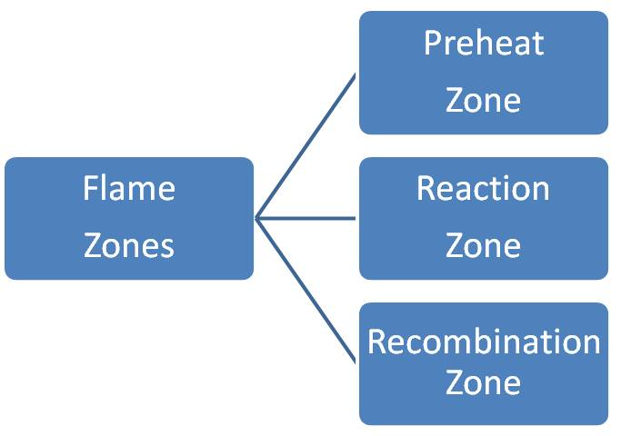
-
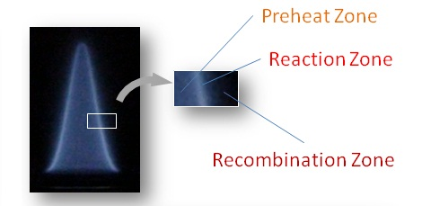
Preheat Zone: Negligibly small heat release.
- Decomposition of fuel takes place, leading to intermediate radical formation.
- Certain chemical reactions take place in this zone.
- Reaction zone is very thin as compared to the preheat zone.
- Temperature gradient and concentration gradient are high.
- Diffusion of heat and radicals from this zone to preheat zone sustains combustion.
- Negligible heat release in this zone.
Reaction Zone: Most of the chemical energy is released in the form of heat.
Recombination Zone: CO2 and H2O are formed.
-
Hydrocarbon flames � characterized by the emitted visible radiation.
Dark zone: unburnt gases are heated to the critical temperature.
- Highest temperature prevails in this zone.
- Color of luminous zone depends on the fuel-air ratio.
- Fuel lean mixture: blue colored flame due to excited CH radical.
- Fuel rich mixture: green colored flame due to excitation of C2 molecule.
- Highly fuel rich mixture: yellow colored flame due to soot formation.
- Observed especially in rich flames.
Luminous zone: region where much of the chemical reactions take place.
Diffusion Zone: outer cone above luminous zone.
Characterization of Premixed Flame
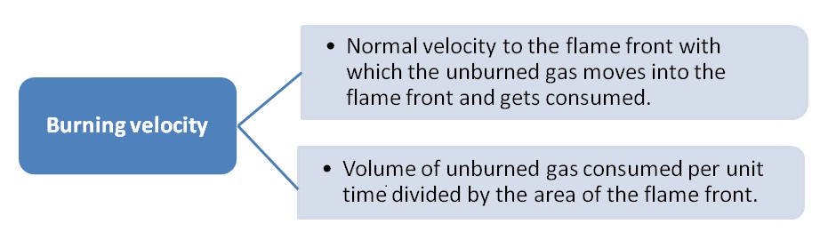-
Importance of burning velocity
- Premixed flame can be characterized by laminar burning velocity.
- Laminar burning velocity influences the flame shape.
- Laminar burning velocity dictates the stability characteristics of the flame.
- Laminar burning velocity dictates flame quenching.
Burning Velocity Measurement Methods
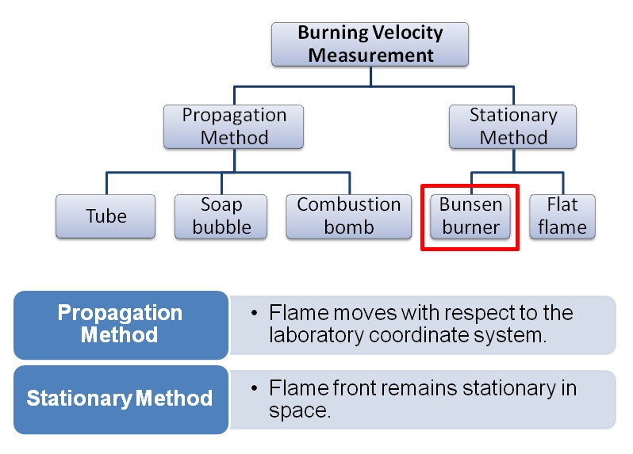Stationary Flame Method (Bunsen Burner)
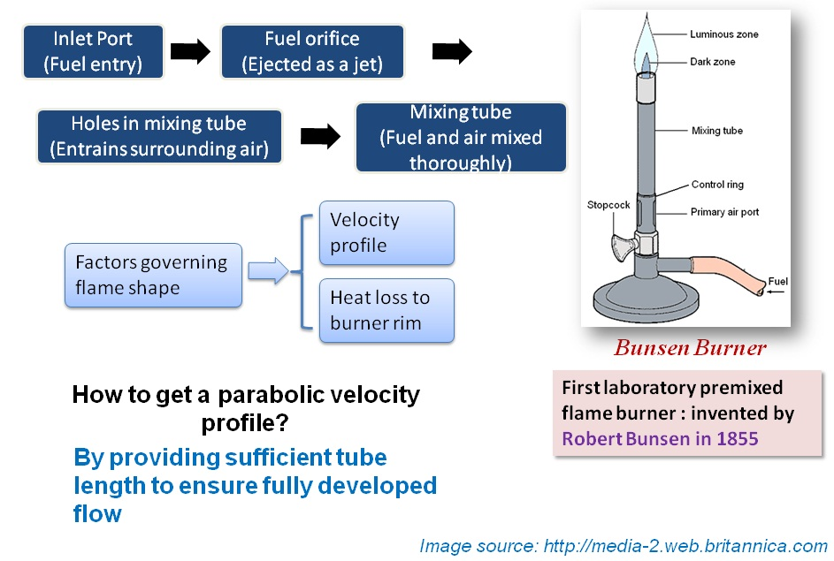Stationary Flame Method (Bunsen Flame)
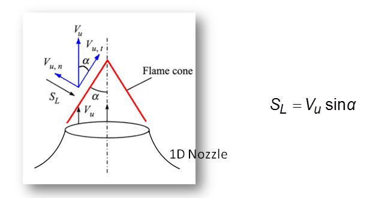-
Angle Method
Importance of burning velocity:
- Uniform velocity profile has to be maintained at the tube exit.
- Nozzle is employed to maintain uniform velocity profile.
- Infinitely thin perfectly conical flame front is established.
- For flame to be stationary, the local burning velocity must be equal to the local flow velocity.
-
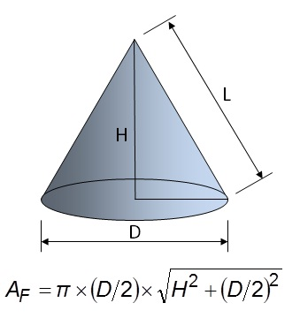
Area Method
- The gas burns at the exit of the tube and a conical flame with a tip and base is established .
- For flame to be stationary, the local burning velocity must be equal to the local flow velocity.
- Flame shape will be influenced by the exit velocity profile and heat loss to the tube wall.
- Lengthy tube ensures fully developed flow.
- For a stationary flame, mass balance provides expression for SL 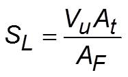 Vu: average flow velocity in tube, At: tube cross sectional area, AF: conical surface area of flame This method is known as area method.
-
Disadvantages:
- Heat loss to the wall cannot be avoided completely.
- Burning velocity does not remain constant along its surface.
- Flame stabilization for large diameter is difficult due to flash back.
Procedure for Area Method
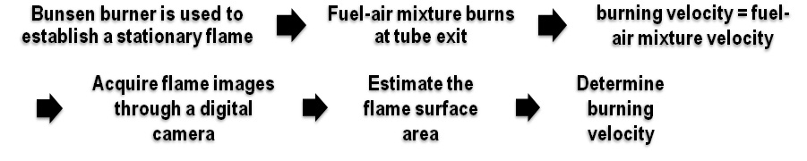
By carrying out a mass balance across the flame,
 Vu - average flow velocity of the unburned fuel-air mixture
Vu - average flow velocity of the unburned fuel-air mixture
At - cross-sectional area of the tube
AF - conical surface area of the flame
flame surface area,
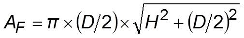

Experimental Setup
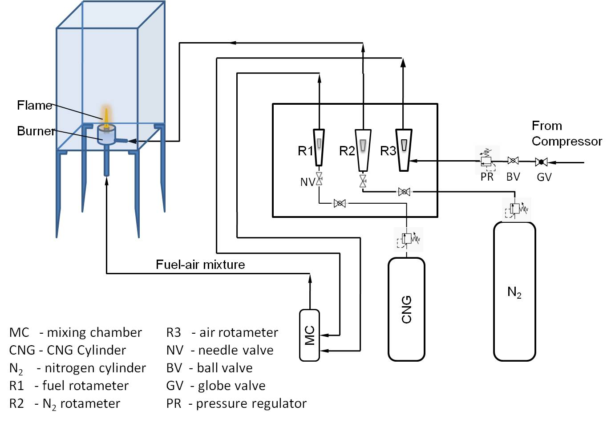
- The burner has to be kept in an enclosed chamber to avoid the entrainment of ambient air.
- The burner has two inlets; one for the fuel-air mixture and the other one for nitrogen gas, which will act as a curtain to the flame.
- Rotameters are employed to measure the flow rate of fuel and air supplied to the burner.
- The supply air and fuel is controlled through a fine control needle valve, fitted just before the rotameters.
- Care should be taken to calibrate the measuring equipments before using in the experimental setup.
- Camera has to be kept sufficient distance away from the flame.
- Ensure burner alignment with the help of sprit level.
Experimental Procedure
- Open the air inlet valve.
- Set the desired pressure in the inlet pressure regulator.
- Fix the fuel flow rate to a desired level.
- Now open the needle valve and set the air flow with the help of rotameter to obtain the specified equivalence ratio.
- Now ignite the mixture at the burner exit.
- Wait for sometime till no further changes in the flame shape is observed.
- Acquire the flame image through image recording system.
- Ensure that the camera is aligned properly to avoid systematic errors.

Effect of Equivalence Ratio on Flame Appearance
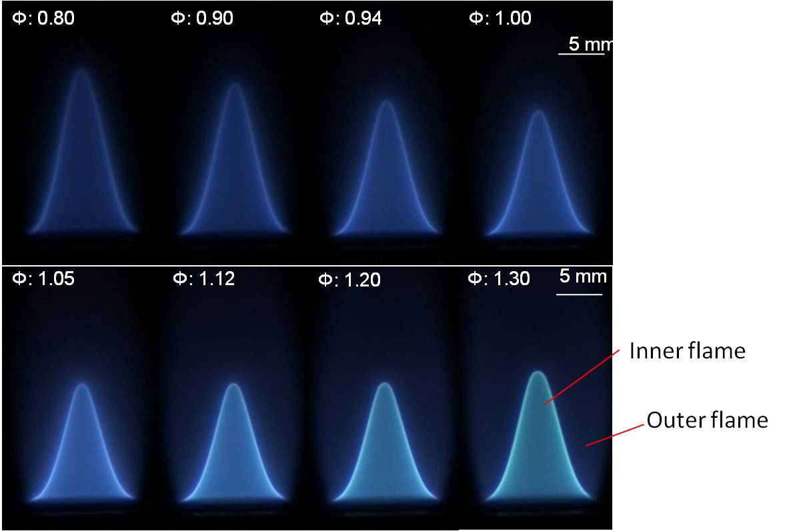
- For the rich flame (0 > 1.00), bright inner and a faint outer flame are observed.
- The outer flame is caused due to the burning of hot unburnt fuel with the entrained ambient air.
- Attached video shows the transition from lean to rich flame and appearance of the outer flame.
Methodology (Image Processing)
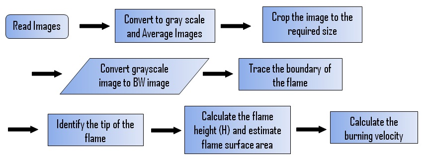 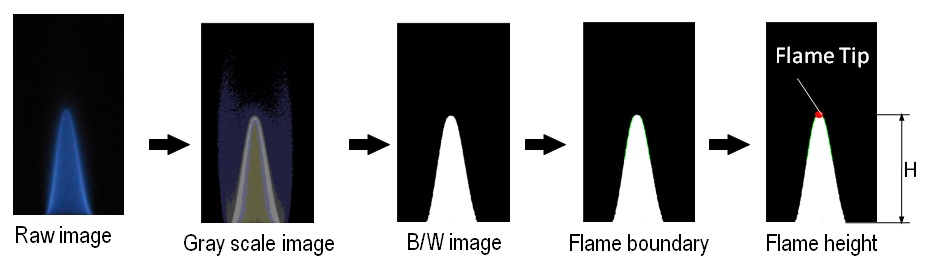
Locations on the Flame Image for Data Extraction
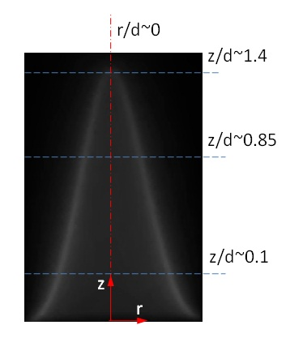
Above figure shows the typical locations at which necessary data for estimating the flame area are extracted.
Intensity Distribution at Different Axial Locations of Flame
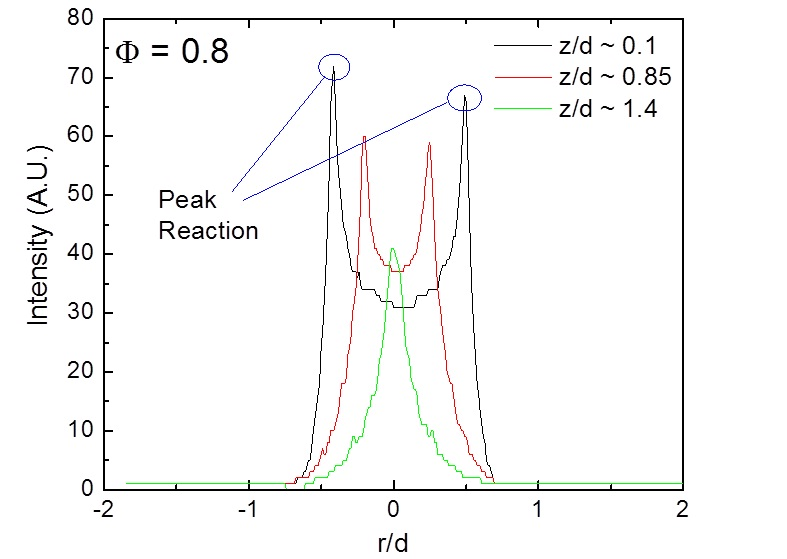
- Intensity distribution along the radius at three axial locations of the flame is shown above.
- Two peaks are observed for z/d = 0.1 and 0.85; z/d = 1.4 has a single peak.
- These peak points are used to estimate the flame surface area.
Effect of Equivalence Ratio on Burning Velocity
Variation of burning velocity with equivalence ratio for CNG-air mixture
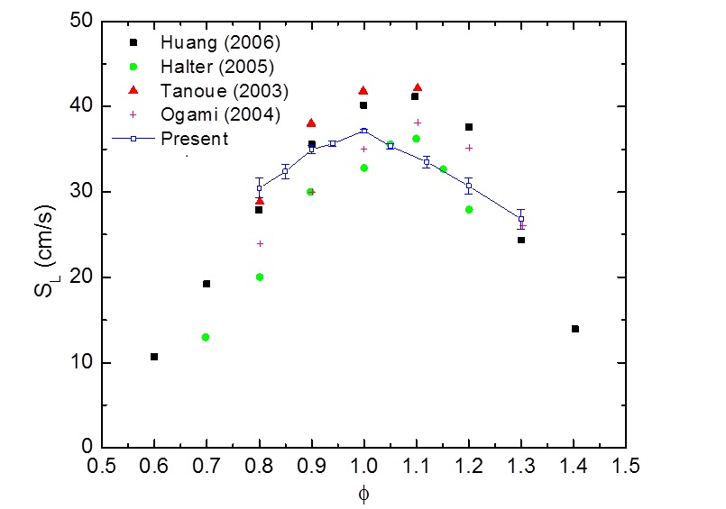
- The estimated burning velocity (SL) of the laminar flame varies non-monotonically with the equivalence ratio (F).
- SL first increases as the flame nears the stoichiometric composition from fuel-lean conditions, where it is small.
- It again decreases as the flame burns in increasingly fuel-rich conditions.
- Peak SL is attained near the stoichiometric mixture composition (F = 1.0).
Effect of Equivalence Ratio on Flame Appearance

- Ensure that there is no leakage in the fuel line.
- Turn on the exhaust fan before starting the experiment.
- Check whether the valves are functioning properly.
- In case of flash-back, increase the air flow rate instantly.
- After completing the experiment, turn off the valve in the fuel cylinder without fail.
- Hood should be used for evacuation of the exhaust gas.
- Keep the fire extinguisher (in operating condition) nearby the experimental setup.

- Define laminar burning velocity.
- What is the importance of laminar burning velocity?
- What are the different methods by which laminar burning velocity can be determined?
- Explain the salient features of propagation method and stationary flame method.
- What should be the condition for a flame to be stationary?
- What is the effect of equivalence ratio on the laminar burning velocity?
- Will pressure and temperature influence laminar burning velocity?
- What is the physical mechanism by which flame is stabilized in the Bunsen burner?
- What is the rationale behind the area method of determining the burning velocity?
- What is quenching diameter?
- Though a uniform velocity profile is maintained at the tube exit, a conical flame is established. Why it is so?

- C. J. Rallis and A. M. Garforth, “The determination of laminar burning velocity”, Prog. Energy Combust. Sci., Vol. 6, pp. 303-329, 1980.
- D. P. Mishra, “Fundamentals of Combustion”, PHI Learning Private Limited, 2010.
- S.Y. Liao, D.M. Jiang, Q. Cheng, “Determination of laminar burning velocities for natural gas”, Fuel, Vol. 83, pp. 1247–1250, 2004.
- Bunsen Burner:
http://www.fotosearch.com/bthumb/STK/STK004/RPP1045.jpg - Domestic Burner:
http://www.static.shell.com/static/public/imgs/generalcontent/recommended_size/lpg/blue_hob_flame_black_backgr.jpg - Jet Engine Afterburner:
http://www.avsim.com/pages/0507/Su33/9----Su33-Exterior-5.jpg - SI Engine:
http://users.telenet.be/cleanteam/index_bestanden/image997.gif - Animations:
www.youtube.com
Image Sources